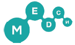
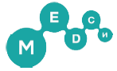
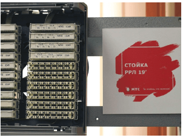
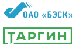
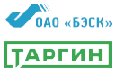

2.1. Инвестиции в человеческий капитал
2.1.1. Новые кадры для инновационной экономики
Для построения инновационной экономики требуются квалифицированные кадры, обладающие высоким уровнем развития профессиональных компетенций и навыками проектной деятельности. Инвестиции в человеческий капитал являются неотъемлемой частью общей стратегии АФК «Система», способствующей привлечению и удержанию лучших профессионалов, развитию человеческих ресурсов и мотивации на достижение результата.
Всероссийская научно-образовательная программа «Лифт в будущее»
«Лифт в будущее» – всероссийская научно-образовательная программа, учрежденная БФ «Система» и Московским государственным университетом им. М. В. Ломоносова в 2011 году и направленная на поиск и развитие талантливой молодежи, а также поддержку детского и юношеского технического творчества, научно-исследовательской деятельности и инженерно-конструкторского проектирования. Программа нацелена на создание в России системы опережающей подготовки молодых специалистов в формате программ дополнительного образования и предполагает раннее включение школьников и студентов в инновационный сегмент экономики. «Лифт в будущее» способствует повышению кадрового потенциала высокотехнологичных компаний АФК «Система», а также формированию резерва для наукоемких отечественных предприятий и перспективных отраслей промышленности.Программа реализуется при поддержке Министерства образования и науки Российской Федерации (Минобрнауки России) и целого ряда субъектов Российской Федерации, где проводились соответствующие мероприятия: Московская область, Республика Саха (Якутия), Республика Башкортостан, Свердловская область, Смоленская область, Краснодарский край, Владимирская область, Республика Крым и другие.
Участники программы – учащиеся 8–11 классов школ, организаций среднего профессионального образования и студенты, имеющие высокую мотивацию к изучению естественно-научных и точных дисциплин, а также преподаватели среднего, высшего и дополнительного образования, заинтересованные в популяризации науки и готовые к профессиональному самосовершенствованию.
В 2014–2015 годах Президент Российской Федерации Владимир Путин в своих ежегодных обращениях к Федеральному Собранию подчеркивал важность создания Национальной технологической инициативы, необходимой для перехода к новым технологическим укладам и противодействия вызовам, с которыми страна столкнется через 15–20 лет. Появившаяся в 2011 году программа «Лифт в будущее» вносит вклад в решение этой задачи через формирование нового поколения кадровой инженерной элиты страны.
Главным инструментом реализации программы является практико-ориентированная проектная работа, направленная на развитие инновационных отраслей, приоритетных для развития Корпорации, российских регионов и наукоемких отраслей. Мероприятия адресной поддержки, направленные на индивидуальную работу с талантливыми детьми и молодежью, проводятся по специально разработанной методике, основанной на междисциплинарном проектном подходе при активном участии индустриальных партнеров из числа компаний Группы АФК «Система».
В 2015 году к оценке заявок, представленных на конкурс «Система приоритетов», было привлечено 50 экспертов из различных отраслей. В проведении инженерно-конструкторских школ и экспертизы проектов приняли участие специалисты 14 компаний Корпорации, в том числе из МТС, РТИ, «Биннофарм», «Медси», «Детский мир», «МТС-Банк», Segezha Group, Группы «Кронштадт», Технопарка «Саров» и других.
Согласно заключению Экспертного совета Агентства стратегических инициатив программа «Лифт в будущее» стала действенным инструментом выявления и отбора талантливых молодых людей, создания для них особых условий развития и формирования из них сообщества новых лидеров для высокотехнологичных региональных предприятий, российской экономики и социальной сферы. Тиражирование этой практики признано целесообразным во всех субъектах Российской Федерации.
Эффективность модели «Лифта в будущее» как площадки для поиска и ускоренного развития молодых талантливых кадров и проектных команд для высокотехнологичных и наукоемких отраслей признана на федеральном уровне. На реализацию программы в 2015 году было выделено государственное софинансирование в размере 6 млн руб. на оплату путевок для участников выездных инженерно-конструкторских школ, победители которых впервые смогли претендовать на гранты Президента Российской Федерации

«Сейчас программа «Лифт в будущее» нацелена на подбор, подготовку и профориентацию детей прежде всего школьного возраста. Постепенно программа будет расширяться и охватит другие возрастные категории. У ее участников появится возможность переходить со ступени на ступень вплоть до уровня молодых специалистов. Сегодняшние школьники смогут подавать заявки на участие в студенческих конкурсах, а также будет следующая ступень – поддержка молодых специалистов и предпринимателей в сфере инженерных высокотехнологичных специальностей. Наше уникальное преимущество – это понимание того, какими качествами должен обладать будущий успешный сотрудник ДЗК, а также владение оригинальными преподавательскими методиками. Более сложная структура программы интереснее для АФК «Система», ведь компании Группы смогут впоследствии пользоваться тем кадровым резервом, который составят участники программы».
Елена Чернышкова
Президент БФ «Система»
Согласно заключению Экспертного совета Агентства стратегических инициатив программа «Лифт в будущее» стала действенным инструментом выявления и отбора талантливых молодых людей, создания для них особых условий развития и формирования из них сообщества новых лидеров для высокотехнологичных региональных предприятий, российской экономики и социальной сферы. Тиражирование этой практики признано целесообразным во всех субъектах Российской Федерации.
Эффективность модели «Лифта в будущее» как площадки для поиска и ускоренного развития молодых талантливых кадров и проектных команд для высокотехнологичных и наукоемких отраслей признана на федеральном уровне. На реализацию программы в 2015 году было выделено государственное софинансирование в размере 6 млн руб. на оплату путевок для участников выездных инженерно-конструкторских школ, победители которых впервые смогли претендовать на гранты Президента Российской Федерации.
Реализация программы «Лифт в будущее» в 2015 году
В рамках реализации программы «Лифт в будущее» в 2015 году прошел Всероссийский конкурс региональных молодежных проектов «Система приоритетов», направленный на включение учащихся школ и организаций среднего профессионального образования в программы инновационного развития региона. В конкурсе приняли участие около 700 старшеклассников из 79 регионов Российской Федерации. Путевками в научно-образовательные школы «Лифт в будущее» были награждены 350 победителей из 40 регионов страны.
В отчетном году совместно с Минобрнауки России было проведено 3 межрегиональных научно-образовательных школы «Лифт в будущее», где велась подготовка школьников, студентов и педагогов по специально разработанной для них программе, ориентированной на решение конкретных задач отраслей и регионов.

Я рад, что многолетнее партнерство Министерства образования и науки Российской Федерации и БФ «Система» продолжается. В этом году нам удалось объединить на площадке научно-образовательной школы «Лифт в будущее» не только 150 победителей ежегодного Всероссийского конкурса региональных школьных проектов «Система приоритетов», но и 350 детей, которые приедут на профильную инженерную смену благодаря квотам от министерства».
Вениамин Каганов
Заместитель министра образования и науки Российской Федерации
Межрегиональные научно-образовательные школы «Лифт в будущее» в 2015 году
| Место проведения | Даты проведения | Количество участников |
|---|---|---|
| Анапа | 19 марта – 9 апреля | 150 |
| Ступино | 7–27 августа | 100 |
| Артек | 13 ноября – 3 декабря | 100 |
Достижения победителей конкурсов и школ «Лифт в будущее»:
- создание прототипа системы сенсорного замещения (поддержано Фондом «Сколково» и Фондом поддержки слепоглухих «Со-единение»);.
- проектирование прототипа модульного дрона для использования в труднодоступных районах Восточной Сибири (особо отмечено компанией «РТИ»);
- разработка проекта по электрификации Крыма и подготовка предложения по реконструкции города Севастополя
В рамках «Лифта в будущее» были также организованы следующие мероприятия: конкурс методических разработок преподавателей «Наставник» (13 победителей); конкурс для студентов, молодых ученых и аспирантов «Intellect1ALL» (58 проектов-победителей); конкурс студенческих интернет-стартапов (4 проекта-победителя получили места в Бизнес-инкубаторе Российского экономического университа им. Г. В. Плеханова) и программа стажировок для молодых специалистов «Шаг к успеху». Лучшие проекты участников программы были представлены на Московском фестивале науки в Московском государственном университете им. М. В. Ломоносова и Всероссийском форуме «Будущие интеллектуальные лидеры России» в Ярославле
В 2015 году по путевке Технопарка «Саров» при поддержке Департамента образования администрации города Сарова и отдела образования Дивеевского района Нижегородской области 22 школьника из Сарова и Дивеево – победители школьных, городских и всероссийских олимпиад по естественно-научным дисциплинам и соревнований по робототехнике из школы дополнительного образования «Вектор++» – стали участниками профильных смен программы «Лифт в будущее» в молодежных лагерях «Артек» и «Смена». В дальнейших планах – организация образовательных мероприятий программы на площадке Технопарка.
По итогам конкурса «Шаг к успеху» для студентов и недавних выпускников ведущих российских вузов были подготовлены 46 рабочих мест в МТС, «МТС-Банк», «Детский мир», «Биннофарм», «Бизнес-Недвижимость», БЭСК, «Медси», МГТС, «Интеллект Телеком», «Таргин», «СГ-трейдинг».
Для кадрового обеспечения реализации программы «Лифт в будущее» в 2015 году были проведены курсы подготовки более 30 преподавателей и руководителей лабораторий и мастерских научно-технического творчества по уникальной программе «Школы генеральных конструкторов».
Конкурсы, грантовые программы, внутрироссийские стажировки, реализованные в рамках программы «Лифт в будущее» в 2015 году
| Формат | Количество | Количество участников |
|---|---|---|
| Конкурсы/td> | 3 | 770 |
| Грантовые программы | 1 | 400 |
| Внутрироссийские стажировки | 2 | 185 |
Результаты реализации программы к 2015 году
школьников и студентов стали участниками мероприятий «Лифта в будущее»
школьников и студентов стали победителями и призерами
школьников получили гранты «Лифт в будущее»
представителей бизнеса, научноисследовательских и образовательных организаций стали кураторам проектов программы
студентов стали стипендиатами программы
конкурса студенческих работ прошли стажировку на высокотехнологичных предприятиях Европы
проведено среди школьников и студентов
получили гранты на организацию проектной работы со школьниками в лабораториях ведущих вузов России – STEM-центры
прошли повышение квалификации в Московском государственном университете им. М. В. Ломоносова
Планы развития
Программа «Лифт в будущее» носит долгосрочный характер. Основной задачей в 2016 году станет создание комплексной системы развития талантливой и одаренной молодежи, в том числе:
- усиление интеграции программы «Лифт в будущее» с Национальной технологической инициативой;
- реализация программ опережающей подготовки школьников, студентов и педагогов в рамках научно-образовательных школ «Лифт в будущее», проводимых на базе федеральных детских центров в России;
- дальнейшее сопровождение и поддержка авторов школьных и студенческих проектов в сфере развития субъектов Российской Федерации, администрирование проектов, организация практик и стажировок, включение лучших авторов в кадровый резерв;
- запуск грантовых механизмов институциональной поддержки инженерно-технического образования;
- участие в разработке программ дополнительного образования для школьников, студентов и преподавателей в сфере инновационного проектирования с целью кадрового обеспечения реализации программы «Лифт в будущее» в субъектах Российской Федерации
ГК «Медси»: делимся экспертизой
 
Для формирования привлекательного бренда компании как работодателя и снижения расходов на рекрутмент в среднесрочной перспективе ГК «Медси» в 2015 году приступила к реализации проекта «Делимся экспертизой», целевой аудиторией которого стали студенты магистерской программы Высшей школы экономики (НИУ ВШЭ), кафедры «Управление и экономика здравоохранения», а также студенты и выпускники медицинского колледжа № 8 Департамента здравоохранения города Москвы.

Для формирования привлекательного бренда компании как работодателя и снижения расходов на рекрутмент в среднесрочной перспективе ГК «Медси» в 2015 году приступила к реализации проекта «Делимся экспертизой», целевой аудиторией которого стали студенты магистерской программы Высшей школы экономики (НИУ ВШЭ), кафедры «Управление и экономика здравоохранения», а также студенты и выпускники медицинского колледжа № 8 Департамента здравоохранения города Москвы.
Летом 2015 года для студентов НИУ ВШЭ был проведен первый мастер-класс по теме «Особенности оплаты труда медицинских работников и управление результативностью». Участники узнали, как разрабатывается система мотивации и какие инструменты управления результативностью можно использовать в управлении персоналом. В августе и сентябре 2015 года три студента кафедры ВШЭ «Управление и экономика здравоохранения» прошли практику в клиниках компании, работая над реальными бизнес-проектами под руководством директоров структурных подразделений. В 2016 году компания планирует продолжить сотрудничество с Высшей школой экономики: эксперты «Медси» проведут несколько мастер-классов для студентов, на практику вновь будут приняты молодые специалисты.
В декабре 2015 года был организован «День знаний с МЕДСИ» – интерактивный семинар с практическими упражнениями для студентов Московского колледжа № 8 Департамента здравоохранения города Москвы. В проекте приняли участие 70 человек. На 2016 год запланировано увеличение охвата аудитории в несколько раз.
Segezha Group и Петрозаводский государственный университет: соглашение о научно-техническом сотрудничестве
5 марта 2015 года Segezha Group и Петрозаводский государственный университет (ПетрГУ) подписали соглашение о научно-техническом сотрудничестве, в рамках которого предполагается проведение совместных мероприятий в научно-технических и технологических сферах, представляющих взаимный интерес по следующим приоритетным направлениям:
- наукоемкие и ресурсосберегающие технологии в лесной промышленности, деревообработке, целлюлозно-бумажной промышленности;
- инновационные разработки в сфере энергоэффективного деревянного домостроения и новых материалов из отходов деревообрабатывающего производства.
После подписания соглашения сотрудники IT-парка ПетрГУ организовали для руководителей Segezha Group серию презентаций, продемонстрировали последние разработки, а также уже реализованные и внедренные на производстве инновационные проекты.

«Segezha Group готова активно сотрудничать со специалистами Петрозаводского университета как в инновационных областях, так и в традиционных междисциплинарных прикладных исследованиях. Мы убедились, что в ПетрГУ работает команда, которая смогла воплотить передовые научные разработки в реальные бизнес-проекты, многие из которых уже доказали свою эффективность».
Сергей Помелов
Президент ГК «Сегежа»
РТИ: система воспроизводства высококвалифицированных специалистов и работа со студентами
 Долгосрочная программа «Создание довузовского сегмента системы воспроизводства высококвалифицированных специалистов для Группы компаний «РТИ» состоит из ряда взаимосвязанных проектов: создание и сопровождение лицейских и профильных классов, подготовка в профильные технические вузы, профориентация учащихся в периметре холдинга, вовлечение школьников в проектную деятельность
Долгосрочная программа «Создание довузовского сегмента системы воспроизводства высококвалифицированных специалистов для Группы компаний «РТИ» состоит из ряда взаимосвязанных проектов: создание и сопровождение лицейских и профильных классов, подготовка в профильные технические вузы, профориентация учащихся в периметре холдинга, вовлечение школьников в проектную деятельность
Взаимодействие Группы компаний «РТИ» со школьниками развернуто на базе подшефной Инженерно-технической школы им. дважды Героя Советского Союза П. Р. Поповича, где действует радиостанция, оснащенная современным оборудованием, и проводятся дополнительные занятия по физике и математике и курсы лекций по инженерии преподавателями Московского физико-технического института (МФТИ). Кафедра МФТИ «Интеллектуальные информационные радиофизические системы» является базовой кафедрой компании. Она осуществляет исследовательское, образовательное, кадровое сопровождение деятельности дочерних компаний ОАО «РТИ».
РТИ ведет работу по привлечению в штат подготовленных специалистов, знакомых с технологиями и условиями предприятий компании. Для этого компания сотрудничает с ведущими техническими вузами (МГТУ им Н. Э. Баумана, МФТИ, МАИ, МАТИ, МИРЭА, НовГУ) и другими учебными заведениями. Отобранные студенты проходят в компании производственную и преддипломную практику с последующим трудоустройством в научно-производственные подразделения. Также компания осуществляет целевую подготовку специалистов по направлениям «радиоэлектронные средства информационных технологий» и «функциональная наноэлектроника».
ПАО «Микрон», входящее в отраслевой холдинг РТИ, также ведет постоянную профориентационную работу среди молодежи Зеленограда и других городов России. В 2015 году было проведено 25 профориентационных экскурсий на предприятие, которые посетили более 500 человек.

проведено в 2015 году на завод «Микрон» в рамках программы профориентации для более 500 человек
МТС: инвестиции в развитие технического образования
 МТС активно сотрудничает с высшими учебными заведениями для повышения качества подготовки студентов профильных специальностей. Компания выступает одним из ключевых спонсоров Университета Иннополис с момента его основания в 2012 году. Университет находится в инновационном городе Иннополис, в Верхнеуслонском районе Республики Татарстан и специализируется на образовании и научных исследованиях в области современных информационных технологий и робототехники.
МТС активно сотрудничает с высшими учебными заведениями для повышения качества подготовки студентов профильных специальностей. Компания выступает одним из ключевых спонсоров Университета Иннополис с момента его основания в 2012 году. Университет находится в инновационном городе Иннополис, в Верхнеуслонском районе Республики Татарстан и специализируется на образовании и научных исследованиях в области современных информационных технологий и робототехники.
В 2015 году МТС открыла в региональных вузах три лаборатории: на кафедрах «Информатики и прикладной математики» и «Автоматизированных информационных систем и технологий» Брянского государственного университета им. академика И. Г. Петровского, на кафедре «Вычислительной техники» в смоленском филиале Национального исследовательского университета «МЭИ», в орловском филиале Московского государственного университета путей сообщения. Лаборатории, в которых установлено современное телекоммуникационное оборудование, дают возможность получить опыт практической работы для студентов технических специальностей.
 Работая в «Лаборатории МТС», студенты могут познакомиться с протоколами передачи данных и маршрутизацией трафика, которые используются на реальных сетях операторов связи и корпоративных сетях. Также у учащихся вузов есть возможность изучить передачу голоса в сетях с пакетной коммутацией по протоколу IP (Voice IP). Подобная практика сегодня применяется на предприятиях любого уровня и любых сфер деятельности. Также в рамках соглашений с вузами МТС осуществляет экспертную и ресурсную поддержку студенческих проектов, связанных с телеком-сферой, проводит мастер-классы, занимается организацией учебных, производственных и преддипломных практик студентов
«Segezha Group готова активно сотрудничать со специалистами Петрозаводского университета как в инновационных областях, так и в традиционных междисциплинарных прикладных исследованиях. Мы убедились, что в ПетрГУ работает команда, которая смогла воплотить передовые научные разработки в реальные бизнес-проекты, многие из которых уже доказали свою эффективность».
Сергей Помелов
Президент ГК «Сегежа»
«Таргин» и БЭСК: сотрудничество с Уфимским государственным нефтяным техническим университетом
 
1 апреля 2015 года состоялось подписание договора о сотрудничестве между нефтесервисным холдингом «Таргин» и Уфимским государственным нефтяным техническим университетом (УГНТУ), а 25 декабря с университетом подписала договор БЭСК. Документы подразумевают сотрудничество по целому ряду направлений, включая образовательную, научно-исследовательскую и инновационную деятельность, профориентационную работу и содействие трудоустройству выпускников.

1 апреля 2015 года состоялось подписание договора о сотрудничестве между нефтесервисным холдингом «Таргин» и Уфимским государственным нефтяным техническим университетом (УГНТУ), а 25 декабря с университетом подписала договор БЭСК. Документы подразумевают сотрудничество по целому ряду направлений, включая образовательную, научно-исследовательскую и инновационную деятельность, профориентационную работу и содействие трудоустройству выпускников.
Для компаний в вузе будут разработаны рабочие учебные планы и программы дисциплин с учетом их потребностей и производственной специфики. При поддержке БЭСК университет организует довузовскую подготовку учащихся школ и рабочей молодежи на подготовительных курсах. УГНТУ окажет научно-технические услуги, направленные на решение актуальных задач в сфере электроэнергетики, а электросетевая компания будет проводить экспертизу научно-технических разработок вуза и при необходимости апробировать их на своих объектах.
Совместно с «Таргин» в вузе планируется формировать темы для курсового и дипломного проектирования, проводить лекции, семинары и тренинги с участием специалистов-практиков. Также у сторон есть взаимный интерес к осуществлению научно-исследовательских и опытно-конструкторских работ, разработке учебно-методической и производственно-технической литературы, экспертизе и тестированию разработок на объектах компании.
В рамках сотрудничества в 2015 году была организована уже вторая совместная научно-техническая конференция «Сервисные услуги в добыче нефти», цель которой – развитие профессиональных знаний специалистов, их привлечение к участию в решении конкретных технических задач. Всего в конференции приняли участие 253 человека, выступили более 60 докладчиков, по итогам в сборнике опубликованы 114 статей.

«Рад констатировать, что идея нашего совместного научно-практического мероприятия с Уфимским государственным нефтяным техническим университетом уже второй год не просто воплощается в жизнь, но и на глазах крепнет и приобретает все больший вес. Мы по-прежнему преследуем цель разглядеть наиболее перспективных специалистов завтрашнего дня в сегодняшних студентах и своевременно пригласить их на работу в «Таргин». Надеемся с помощью конференции дать возможность талантам проявить себя, поверить в свои силы, получив качественную обратную связь от опытных теоретиков и практиков нефтегазового дела»
Камиль Закиров
Генеральный директор АО «Таргин»
2.1.2. Развитие инновационного потенциала молодежи
«Телеком Идея»
Проект «Телеком Идея» – открытая кросс-функциональная инновационная платформа, созданная ПАО «МТС» при поддержке Министерства связи и массовых коммуникаций Российской Федерации, Высшей школы экономики, АФК «Система» и ряда других партнеров (в том числе компаний Корпорации) для выявления и поддержки талантливой молодежи, работающей над проектами в области информационно-коммуникационных технологий и услуг, которые могут быть востребованы в коммерческой, социальной и государственной сферах. Одноименный конкурс молодежных инновационных проектов успешно проводится с 2011 года. За это время в нем приняли участие около 900 команд

расходы БФ «Система» на поддержку науки,образования и просвещения в 2015 году

«Рад констатировать, что идея нашего совместного научно-практического мероприятия с Уфимским государственным нефтяным техническим университетом уже второй год не просто воплощается в жизнь, но и на глазах крепнет и приобретает все больший вес. Мы по-прежнему преследуем цель разглядеть наиболее перспективных специалистов завтрашнего дня в сегодняшних студентах и своевременно пригласить их на работу в «Таргин». Надеемся с помощью конференции дать возможность талантам проявить себя, поверить в свои силы, получив качественную обратную связь от опытных теоретиков и практиков нефтегазового дела»
Андрей Теребенин
Старший управляющий партнер венчурного фонда Sistema Asia Fund
Международный инновационный молодежный саммит
27 марта 2015 года ОАО АФК «Система» совместно с ее дочерними компаниями ПАО «МТС» и SSTL при поддержке Высшей школы экономики (НИУ ВШЭ) и Московской школы управления «Сколково» провели международный инновационный молодежный саммит в Москве.
Мероприятие было организовано с целью развития международной кооперации в области инноваций в телекоммуникационной сфере и поддержки социального предпринимательства в России. Участники саммита – победители конкурса «Телеком Идея Индия», финалисты «Телеком Идея Россия» прошлых лет, студенты и сотрудники высших учебных и научно-исследовательских учреждений, молодые разработчики прорывных технологий и предприниматели двух стран.
В ходе мероприятия были отобраны 11 проектов (пять – из Индии и шесть – из России), имеющих лучшие характеристики с точки зрения научно-технических, экономических и финансовых показателей в четырех номинациях: инновации в программных продуктах, инновационные технические решения для систем связи, инновации в сервисе и контенте, маркетинговые и управленческие инновации.
Среди выигравших проектов с индийской стороны оказались следующие: сервис для выращивания растений в городских условиях, система учета электроэнергии с автоматическим снятием показаний счетчика, телекоммуникационная платформа по рынку труда, «умное устройство» для видеонаблюдения и обнаружения вторжения и другие.
Российскими проектами-победителями стали: сервис по анализу обеспеченности населения социально значимыми учреждениями, устройство для повышения безопасности онлайн-платежей, мобильный аппарат диагностики здоровья, приложение по аудио- и видеораспознаванию речи, облачная система из концепции «умного дома» по управлению домашней техникой, система удаленного хранения записей видеорегистратора и другие решения.
Преимущества участия в конкурсе «Телеком Идея»:
 возможность представить стартап экспертному совету МТС и дочерним компаниям АФК «Система»;
возможность представить стартап экспертному совету МТС и дочерним компаниям АФК «Система»;
 бесплатное участие в менторской и акселерационной программе;
бесплатное участие в менторской и акселерационной программе;
 гранты партнеров на обучение и развитие проекта;
гранты партнеров на обучение и развитие проекта;
 участие в зарубежном образовательном «Телеком туре».
участие в зарубежном образовательном «Телеком туре».
Победители конкурса «Телеком Идея» ежегодно отправляются в образовательный тур – поездку в зарубежные страны для знакомства с деятельностью ведущих телекоммуникационных операторов, научных центров, ИТ-кластеров. За четыре года лауреаты «Телеком Идея» побывали в Швейцарии и Германии (2011), ОАЭ (2012), Эстонии и Швеции (2013), Индии (2014). В 2015 году девять лучших проектных команд отправились в Израиль, где посетили компании ECI, SimilarWeb, Jerusalem Venture Partners, Simgo, Altair, Viber, Golan Telecom, стартап Fone Do, коворкинг MASH. Завершилась деловая программа инвестиционной сессией на базе Тель-Авивского университета.

«В 2015 году конкурсу молодежных инноваций «Телеком Идея» исполнилось пять лет. Это серьезная дата для проекта. Мы очень рады, что юбилейный год начался с международного образовательного мероприятия с участием индийских коллег. Инновации приобретают глобальный характер, нам очень полезно учиться друг у друга, обмениваться идеями и даже критиковать проекты, ведь в споре рождается истина. Сегодня у молодых ученых есть доступ к массивам знаний из разных областей науки, открытым программным платформам, а это мощная база для реализации дерзких инновационных идей».
Андрей Дубовсков
Президент ПАО «МТС»
Результаты работы платформы «Телеком Идея» в 2015 году

В 2015 году конкурс «Телеком Идея» прошел в три этапа:
1. Отборочный тур (сбор электронных заявок на сайте конкурса и голосование экспертов).
2. Образовательная программа (победители отборочного тура приняли участие в мастер-классах и вебинарах экспертов по инновационному предпринимательству).
3. Менторская программа (менторы из Высшей школы маркетинга и развития бизнеса НИУ ВШЭ помогли полуфиналистам доработать и адаптировать конкурсные проекты под запросы рынка).
Основной темой конкурса «Телеком Идея – 2015» стали «зеленые» и «умные» решения для развития бизнеса, городского хозяйства и повышения качества жизни населения. В конкурсе приняли участие проекты, способствующие формированию экологичной, комфортной и доступной для всех категорий граждан городской среды с использованием инновационных ИТ-решений на базе высокоскоростных мобильных и фиксированных сетей передачи данных. Проекты отбирались по следующим ключевым направлениям: академические решения в системах связи, телемедицина, экологические проекты, образовательные проекты, финансы и банковские услуги, ЖКХ, творческие и рекламные проекты, решения для розничной торговли. Специальные призы в профильных отраслевых номинациях вручили «МТС-Банк», компании «Медси» и «Стрим».
В рамках «Телеком Идея – 2015» прошли отборочные мероприятия в Центральном, Северо-Западом, Уральском, Сибирском и Поволжском федеральных округах, а также в Белоруссии. Цель работы региональных площадок – содействие молодым специалистам и их командам в развитии проектов и поиске инновационных идей для телекоммуникационной отрасли и ИТ-индустрии. В отчетном году платформа использовала новые форматы работы с инновационным сообществом – хакатоны и отраслевые конкурсы.
Хакатон «Телеком Идея BY MTS 2015»
В отчетном году -МТС совместно с Центром коммерциализации инноваций тиражировала проект «Телеком Идея» в Республику Беларусь. В Минске впервые прошел хакатон «Телеком Идея BY MTS 2015». Цель мероприятия – содействие молодым белорусским специалистам и студенческим командам в развитии ИТ- и телеком-проектов. В ходе хакатона эксперты компании МТС познакомили участников с актуальными трендами и рыночными потребностями, победители конкурса получили путевку в полуфинал международного конкурса «Телеком Идея». Остальные участники хакатона получили возможность проработать проекты с ведущими отраслевыми экспертами, показать разработки потенциальным клиентам, партнерам и СМИ, привлечь новых членов команды, а также получить призы и подарки от организаторов и партнеров события.
МТС: корпоративный акселератор
В 2015 году компания МТС во второй раз организовала корпоративный акселератор – недельную программу для победителей конкурса молодежных инноваций «Телеком Идея».
Партнерами программы выступили Министерство связи и массовых коммуникаций Российской Федерации, Департамент развития высоких технологий города Москвы, Российская венчурная компания (РВК), Высшая школа маркетинга и развития бизнеса, АФК «Система», «Медси», «Стрим», Центр управленческих инноваций им. Н. Д. Кондратьева, Бизнес-инкубатор и Высшая школа маркетинга и развития бизнеса НИУ ВШЭ, Nokia, Google Russia и другие.
Акселерационная программа была разработана в 2014 году для усиления проектов ее участников компетенциями экспертов телекоммуникационной отрасли, менторов и специалистов из различных областей. В рамках проекта лучшие эксперты МТС, партнеры и представители дочерних компаний АФК «Система» помогают молодым предпринимателям осваивать тонкости технологического бизнеса, погружаться в рынки и тренды, строить дорожные карты, учиться моделировать бизнес-процессы и планировать финансовые потоки. За два года корпоративный акселератор прошли более 30 проектов.
В 2015 году в работе корпоративного акселератора приняли участие представители 18 лучших проектов в сфере ИТ- и телекоммуникаций. В результате были выбраны пять инновационных идей. Победители программы попали в финал федерального акселератора технологических стартапов GenerationS, организованного РВК, прошли интенсивную образовательную программу развития бизнеса и смогли побороться за призовой фонд в размере более 6 млн руб. в большом финале.
«Телеком Идея ЮНИОР»
В 2015 году МТС во второй раз провела конкурс «Телеком Идея ЮНИОР» для школьников 7–11 классов. Участники из Москвы, Московской и Самарской областей, Читы, Нижнего Новгорода, Барнаула, Таганрога, Пятигорска и Обнинска моделировали город будущего на основе современных инфокоммуникационных технологий, позволяющих сделать городскую среду более комфортной, удобной, безопасной и экологичной. Авторы лучших идей получили путевки в научно-образовательную школу «Лифт в будущее», где смогли доработать свои проекты при помощи опытных наставников.
Планы на 2016 год
1. Развитие региональных и международных инновационных площадок «Телеком Идея», в том числе создание новых макрорегиональных площадок в Дальневосточном и Южном федеральных округах.
2. Использование новых форматов работы с инновационным сообществом: митапов , харвестов .
Образовательные инициативы Технопарка «Саров»
В рамках развития инновационного потенциала Технопарк «Саров» реализует образовательную программу, рассчитанную как на инновационные компании, так и на более широкую молодежную аудиторию. В 2015 году было проведено более 50 мероприятий, в том числе 15 образовательных программ (тренингов) для резидентов и 12 обучающих программ для школьников, студентов и молодых специалистов. В частности, совместно с Саровским физико-техническим институтом НИЯУ МИФИ, Нижегородским государственным техническим университетом им. Р. Е. Алексеева и резидентами технопарка – научно-образовательным предприятием «Лаборатория образования» и школой информатики «Вектор++» были организованы следующие мероприятия:
- зимний физико-математический праздник для школьников и отборочный тур Всероссийской инженерной олимпиады, в которой приняли участие 100 старшеклассников из Москвы, Коврова (Владимирская область), Нижнего Новгорода и Сарова;
- весенняя физико-математическая школа Sarov-Open Spring School, участниками которой стали 50 учащихся школ и лицеев при МИФИ, Финансовом университете при Правительстве Российской Федерации, средних учебных заведений Сарова и Дивеева;
- второй открытый чемпионат по робототехнике для 60 школьников Нижнего Новгорода и Сарова;
- осенняя физико-математическая школа Sarov-open Autumn School, которую посетили 30 московских, нижегородских и саровских школьников.
Для резидентов технопарка было проведено три семинара по программе «Управленческая подготовка руководителей компаний – резидентов бизнес-инкубаторов Нижегородского региона». Всего в мероприятиях на площадке Технопарка «Саров» приняли участие более 900 человек.